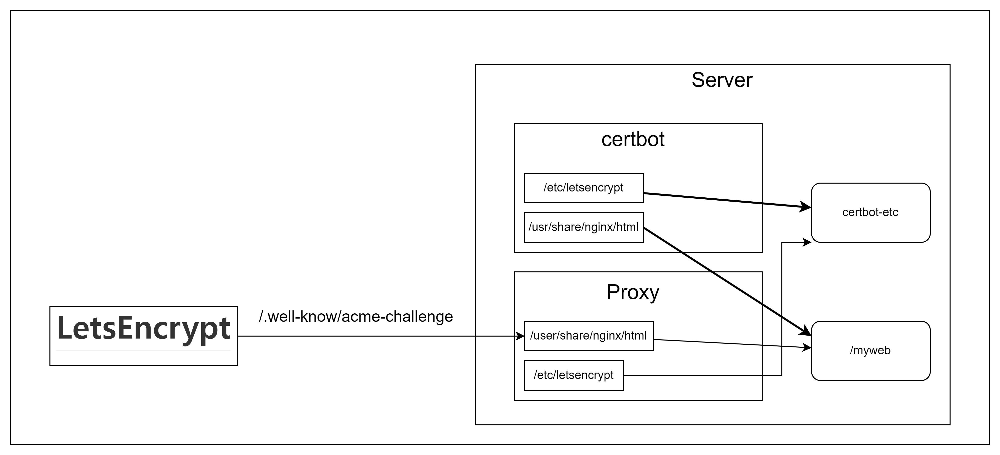

HTTPS 구축하기
HTTPS 동작 방식
AWS HTTP doc
CLOUDFLARE HTTP doc
HTTP는 암호화되지 않은 데이터를 전송합니다.
즉, 브라우저에서 전송된 정보를 제 3자가 가로채고 읽을 수 있습니다. 이는 사용자의 은행 계좌,이메일 서비스,의료 보험에 로그인하는 등 중요한 데이터를 전송할 때 문제가 발생합니다.
HTTP 통신에 또 다른 보안 계층을 추가하기 위해 HTTPS로 확장되었습니다. HTTPS는 HTTP 요청 및 응답을 SSL 및 TLS 기술에 결합합니다.
HTTPS 웹 사이트는 독립된 인증 기관(CA)에서 SSL/TLS 인증서를 획득해야 합니다. 웹 사이트는 신뢰를 구축하기 위해 데이터를 교환하기 전에 브라우저와 웹서버가 인증서를 공유합니다. SSL 인증서는 암호화 정보도 포함하므로 서버와 웹 브라우저는 암호화된 데이터나 스크램블된 데이터를 교환할 수 있습니다.
순서
사용자 브라우저의 주소 표시줄에
https://형식을 입력하여HTTPS웹 사이트를 방문합니다.브라우저는 서버의 SSL 인증서를 요청하여 사이트의 신뢰성을 검증하려고 시도합니다.
서버는 퍼블릭 키가 포함된 SSL 인증서롤 회신으로 전송합니다.
웹 사이트의 SSL 인증서는 서버 아이덴티티를 증명합니다. 브라우저에서 증명이 되면, 브라우저가 퍼블릭 키를 사용하여 비밀 세션 키가 포함된 메세지를 암호화하고 전송합니다.
웹 서버는 개인 키를 사용하여 메세지를 해독하고 세션 키를 검색합니다. 그런 다음, 세션 키를 입력하고 브라우저에 승인 메세지를 전송합니다
이제 브라우저와 웹 서버 모두 동일한 세션 키를 사용하여 메세지를 안전하게 교환하도록 전환합니다.
Let's Encrypt SSL
비용없이 SSL 인증서를 발급해주는 서비스
단, 일정 기간마다(90일)마다 갱신해야합니다.
ssl 설정 방법
certbot과 nginx 기본설정
해당 명령어 설격
(기본값) 실행: 현재 웹 서버에 인증서를 획득하고 설치합니다.
certonly: 인증서를 획득하거나 갱신하지만 설치하지 않습니다.
renew: 만료가 임박한 모든 이전에 획득한 인증서를 갱신합니다.
enhance: 기존 구성에 보안 향상을 추가합니다.
-d 도메인들: 인증서를 획득할 도메인들의 쉼표로 구분된 목록입니다.
--webroot: 인증을 위해 서버의 웹루트 폴더에 파일을 배치합니다.
--webroot-path 웹루트 경로: 여러 도메인에 대해 웹루트 경로를 지정할 수 있습니다.
해당 폴더 패스는 웹 서버에서 설정한 루트 폴더라고 보는게 맞습니다.
-keep-until-expiring, --keep, --reinstall: 요청된 인증서가 기존 인증서와 일치하는 경우, 기존 인증서가 갱신이 필요할 때까지 항상 유지됩니다. ('run' 하위 명령의 경우)
-m 이메일: 등록 및 복구 연락처로 사용되는 이메일입니다. 여러 이메일을 등록하려면 쉼표로 구분하세요.
--agree-tos: ACME 서버의 가입자 계약에 동의합니다.
--no-eff-email: 이메일 주소를 EFF와 공유하지 않습니다.
--dry-run: 어떤 인증서도 디스크에 저장하지 않고 "renew" 또는 "certonly"를 테스트합니다.
테스트시에는 반드시 이 옵션을 사용해서 테스트 진행하지 않으면 오류 발생
docker-compose script
webroot 플러그인을 사용하는 이유
let'sencrypt 인증을 위해서는 인증시 서버를 내려야합니다.
webroot 플러그인을 사용하면 인증시 서버를 내리지 않아도 됩니다.
webroot 방식
webroot-path에 인증에 필요한 파일 저장
letsencrpyt가 webroot-path에 요청을 보내서 파일 검증
인증이 완료시
/etc/letsencrypt에 ssh키 저장
외부 HTTPS 접근시 프록시 서버가 /etc/letsencrypt에 접근해서 키로 암호화 및 복호화를 할 수 있기위해 호스트 PC에 바인드 마운트를 통해 접근할 수 있도록 볼륨 설정을 한다.

이런 구조로 접근하게 됩니다. 그래서 인증파일이 /user/share/nginx/html 내부에 있기 때문에 /.well-know/acme-challenge로 접근시 인증 파일이 있는 위치로 접근하도록 해야합니다.
아직은 인증을 받은 상태가 아니기 때문에 LetsEncrypt에서 요청을 보낼때는 HTTP:80으로 보내게 됩니다.
인증 완료시
certbot command 중
--dry-run옵션 제거실제 인증서를 발급 받기 위해서 제거합니다.
인증서가 저장 되었는지 확인(
선택사항)su - # 루트 아이디로 로그인 시도 cd live/ root@instance-20240224-071346:/home/xxx/09_HTTPS_NGINX/certbot-etc/live# ls README kokopadock.shop이렇게 https 인증서가 저장된 것을 확인할 수 있습니다.
nginx 설정 변경
https로 접속할 경우 301 영구 리다이렉션 상태코드로 https로 리다이렉트하도록 합니다.
웹 서버 설정 다운로드 방법
이렇게 외부 url을 통해 해당 txt 파일을 저장할 수 있습니다.